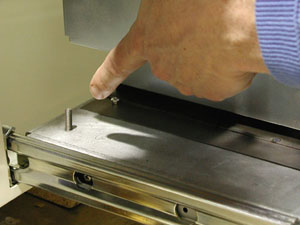
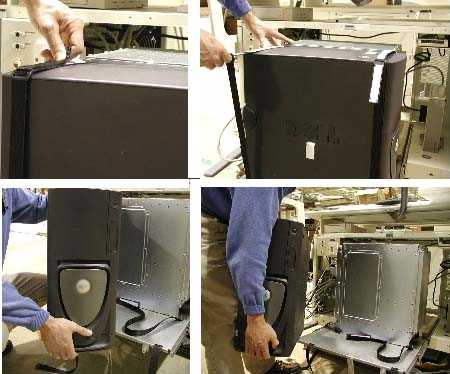
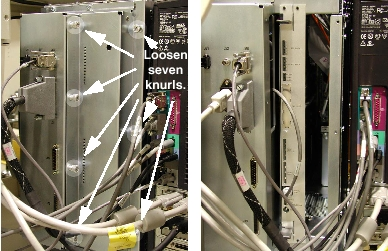
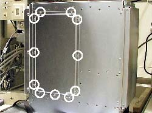
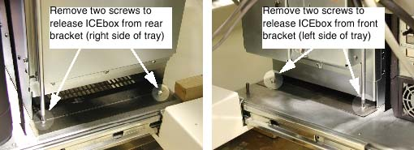
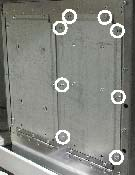
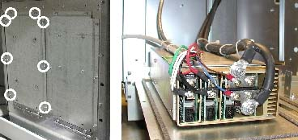

Operating Documentation
Direction 5114045-800, Rev# 10
LightSpeed 4.X Service Information (Advanced)
Operating Documentation |
| Required Persons | Preliminary Reqs | Procedure | Finalization |
|---|---|---|---|
| 1 |
The following procedures describe what must be done in order to access the RIP board (including SCSI and DIP boards) or the PEG-IG board installed in the new VME chassis for Global Consoles.
| POTENTIAL FOR PERSONAL INJURY OR DEATH BY ELECTRIC SHOCK. | |
| POTENTIALLY LETHAL VOLTAGES ARE PRESENT IN THE OPERATOR'S CONSOLE. | |
| To avoid risk of electric shock, Follow proper LOCKOUT/TAGOUT procedures. |
| A ground lug is located at the rear left corner of the tray. It should
be used as a grounding point for ESD wrist-straps, when working inside the
VME recon (ICE) box. See the photo below.  | |
Shutdown application and operating system software.
Power down the console using the power switch located on the front cover.
| POTENTIAL FOR PERSONAL INJURY OR DEATH BY ELECTRIC SHOCK. | |
| POTENTIALLY LETHAL VOLTAGES ARE PRESENT IN THE OPERATOR'S CONSOLE. | |
| To avoid risk of electric shock, Follow proper LOCKOUT/TAGOUT procedures. |
Tag and lockout the main system power, at the main disconnect.
Remove all items (keyboard, trackball, etc.) from the keyboard table top.
Remove the keyboard table top, and set aside (see Keyboard Table Top Replacement - Global Consoles).
Using a screwdriver, release the cover latches and remove the console front cover.
Loosen the two captive screws and use strap to pull out the console tray.
(For GOC2 Only) Remove the velcro straps from the computer, and set the computer out of the way (refer to Illustration 1). Disconnect cables as necessary.
Illustration 1: Removing Computer from Tray (GOC2 shown)

The following procedures describe how to gain access to the various components within the VME chassis (a.k.a. “ICE box”).
Loosen the seven knurls on the right front cover of the VME chassis.
Illustration 2: ICE Box Right Front Cover Removal (GC-Linux pictured)

(For GC-Linux (GOC2) : It may be easier to remove all cables to gain access to the Recon Box board.
Remove the VME right side panel, by removing the 11 screws that hold it in place.
Illustration 3: Remove 11 screws, to remove the ICE box right side panel.

Retain the screws and panel for replacement.
Remove the right front cover from the VME chassis (see Illustration 2).
Remove the left front bulkhead, disconnecting cables as necessary.
Remove the right front cover from the VME chassis (see Illustration 2)
Remove the left front bulkhead, disconnecting cables as necessary.
Remove the entire recon chassis from its brackets.
Illustration 4: Remove recon chassis (ICE box) from its brackets (GC-Linux shown)

Rotate the chassis so that the left side is accessible (remove cables as necessary)
| Scan Data Disk is mounted on flip down door. Hold onto the door while removing the last screw, so that it does not drop inadvertently. | |
Carefully open the front flip-down door (SDD is mounted on door).
Illustration 5: Remove eight screws on front door to access SDD

Remove the entire recon chassis from its brackets
Rotate the chassis so that the left side is accessible (remove cables as necessary)
| VME power supply is mounted on flip down door. Hold onto the door while removing the last screw, so that it does not drop inadvertently. | |
Carefully open the rear flip-down door (power supply is mounted on door)
Illustration 6: Remove eight screws on rear door to access power supply

No finalization required.